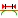

|  | Дистанция конца подвода |
Указание расстояния, на котором запускается скорость подачи отвода перед концом выбранной геометрии.
0 дюймов |
0,5 дюйма |
ПРИМЕЧАНИЕ. Этот параметр используется, если требуется изменить скорость подачи перед выходом в конце выреза.